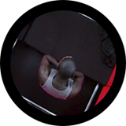

SINOPSIS
En un futuro distópico, en el marco de una sociedad dividida en tres clases, los trabajadores tienen que hacer ejercicio en bicicletas estáticas para obtener méritos para gastarlos en comida, aseo, ropa, para su avatar virtual y en entretenimiento. El único escape de esta vida monótona es participar en Hot Shot un programa de talentos, donde la vida de los protagonistas cambiará.
ESCENAS
{kind=link}
{kind=link}
{kind=link}
Escena 1: Abi canta "Anyone who knows what love is" en el programa HOT SHOT gracias a Bing, sorprendiendo a todo el público. Esta escena impacta, pero su talento la llevará a lo inesperado.
Escena 2: Bing es obligado a ver la publicidad de Abi por no tener los suficientes méritos, dejándolo devastado al ver la dura realidad. Una escena muy fuerte y con muchos sentimientos.
Escena 3: Bing se encuentra en HOT SHOT para "bailar", pero con un vidrio amenaza con suicidarse si no lo dejan hablar. Al permitírselo relata a todos lo que vive y siente, criticando de forma certera y ofensiva al sistema. Una escena llena de emociones y un final inesperado.